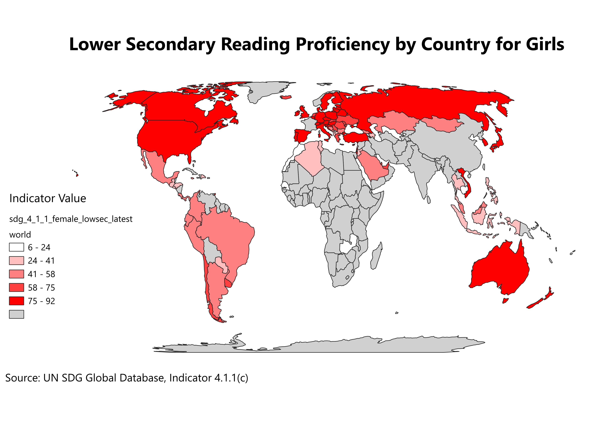

Interactive Choropleth Map
Indicator shown: female lower secondary reading percentage. Hover over a country to see its value.
Interactive choropleth map showing female lower secondary reading percentage.
Print Layout Map

Print layout of the SDG 4.1.1 choropleth map.
1. What is this map showing?
My map shows the percentage of female students in each country who have managed to achieve a minimum reading proficiency. This reading proficiency is defined and standardized by the UN. This goal follows the fourth sustainable development goal (SDG) which ensures equal and inclusive access to education for all. The specific group is Target 4.1, which focuses on gender equality when it comes to access to education. The group I selected is defined as 4.1.1 (c) which is the proportion of children and young people who are near the end of lower secondary education and have achieved a minimum proficiency in reading. I chose to focus on female proficiency because I have observed how adult women in LDCs find themselves exploited by their inability to properly read. This means that they might not be able to properly access legal rights. While countries may enact progressive laws, it's important that citizens understand and use their rights. I have observed how women may find themselves at a disadvantage due to patriarchal restrictions on education.
The darker countries show greater proficiency when reading, with lighter countries showing a lower proficiency. I chose to only display countries with their data from 2022 as this was the latest date possible. The gray countries did not meet these requirements and displayed “no data”.
2. What is a choropleth map?
A choropleth map is a type of map where countries or other regional divisions are shaded using different colors (usually in the form of a categorical scale) in order to represent data. Here each country was colored according to their percentage of female students in lower secondary who have achieved a minimum reading proficiency. Choropleth maps can allow us to easily compare global or regional rates of something because we can quickly categories and compare visually. We can observe patterns quite easily, such as which continents may have lower rates. Since the data is in percentage, it is more useful than raw numbers as we can judge state capacity and not just mere population. However, such maps can also have drawbacks, namely due to the fact that they can trick our perceptions. We are naturally drawn to larger shapes, which means geographically larger countries tend to get more attention. Maps such as mine can also not display regional dynamics and end up treating countries as uniform wholes. While this can be solved by having maps with more divisions, it depends on the availability of data.
3. What new skills did you gain?
This was my first assignment with GIS, and it was the first time that I was exposed to the software. I learned how to download and format CSV data and clean it according to my requirements by sorting and pruning. II also learnt how to create a choropleth map by linking statistical data to the geographical limits and creating a color scheme. I also learned about layer stacking on QGIS, which is an important feature.
I learned some information about SDGs and the information they represent. There were some interesting discussions on the elements of map design- What information needs to be present and what should be missing. What elements need to have attention drawn to them, and what parts do not? These factors played a role when it came to importing the file as an image, as I had to create the layout. I edited the legend, title, and source. I showed missing data in grey and included a scale on the left. Design choices that help make the map easier to understand is important